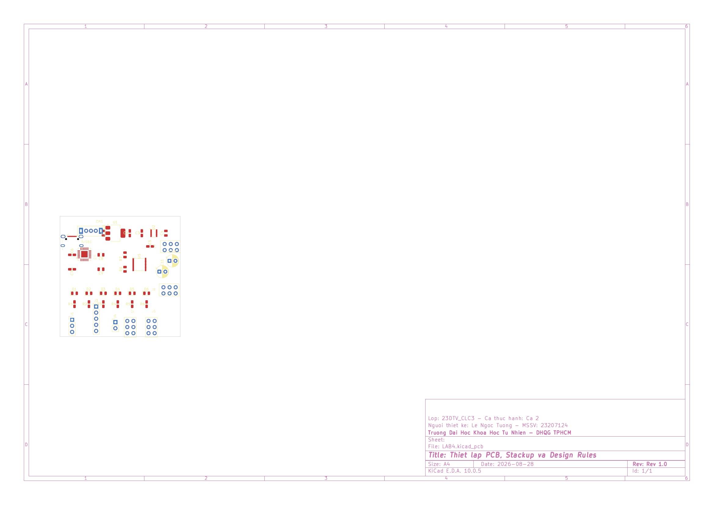
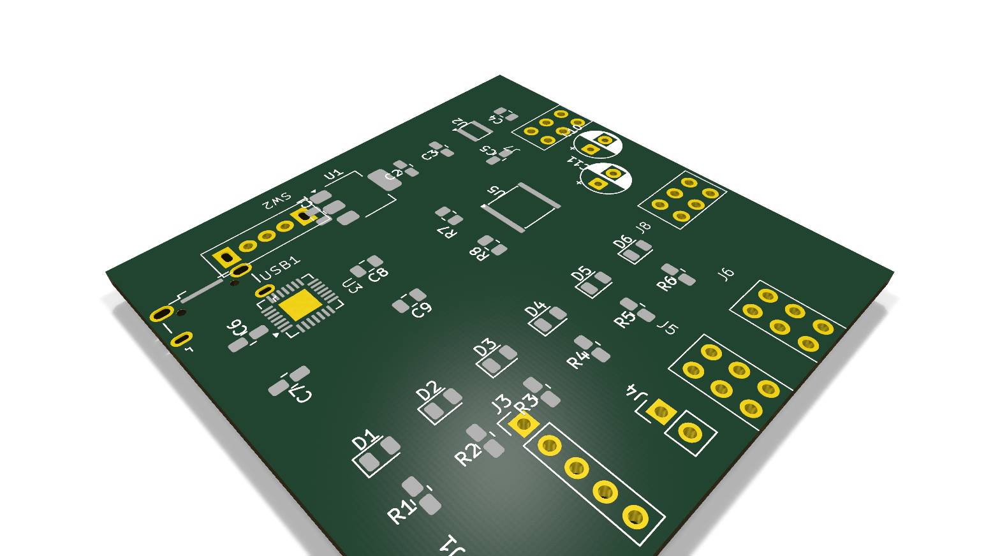

| Họ và tên: | Lê Ngọc Tường |
| MSSV: | 23207124 |
| Lớp: | 23DTV_CLC3 |
| Môn học: | Thiết kế mạch in PCB với KiCad (HK3/2025-2026) |
Sau khi hoàn thành sơ đồ nguyên lý và kiểm tra quy tắc điện ERC đạt kết quả 0 lỗi, toàn bộ dữ liệu linh kiện và liên kết mạng được chuyển sang giao diện PCB Editor để bắt đầu giai đoạn layout bo mạch.
Tools -> Update PCB from Schematic... (phím tắt F8).Total warnings: 0, errors: 0, bấm Update PCB rồi bấm Close để đưa các linh kiện vào không gian làm việc.Edge.Cuts xác định biên dạng cắt thực tế của bo mạch. Đường bao trên lớp này phải tạo thành một đa giác khép kín hoàn toàn và không tự giao cắt.Edge.Cuts trong tab Layers của bảng Appearance.
Để bo mạch sau thiết kế có thể gia công thực tế tại các xưởng sản xuất (như JLCPCB, PCBWay), cấu trúc xếp lớp (Physical Stackup) và các ràng buộc thiết kế (Design Rules Constraints) được thiết lập theo đúng năng lực công nghệ gia công.
Vào File -> Board Setup... -> Board Stackup -> Physical Stackup để cấu hình:
F.Cu và B.Cu), phù hợp với mạch nguồn đa năng và tối ưu chi phí gia công.| STT | Thành phần lớp | Tên lớp trong KiCad | Độ dày | Chức năng kỹ thuật |
|---|---|---|---|---|
| 1 | Lớp phủ bảo vệ mặt trên | Top Solder Mask |
0.010 mm (10 µm) | Chống oxy hóa đồng, mở lỗ pad hàn |
| 2 | Lớp đồng mặt trước | F.Cu (Front Copper) |
0.035 mm (1 oz Cu) | Đi dây tín hiệu, đặt linh kiện SMD |
| 3 | Lõi cách điện trung tâm | Dielectric Core (FR4) |
1.510 mm | Cách điện và định hình cơ học bo mạch |
| 4 | Lớp đồng mặt sau | B.Cu (Back Copper) |
0.035 mm (1 oz Cu) | Đi dây nguồn, phủ đồng mặt phẳng mass (GND) |
| 5 | Lớp phủ bảo vệ mặt dưới | Bottom Solder Mask |
0.010 mm (10 µm) | Chống chạm chập mặt dưới khi hàn |
| Tổng độ dày bo mạch: | 1.600 mm | Độ dày tiêu chuẩn mạch FR-4 2 lớp | ||
Vào File -> Board Setup... -> Design Rules -> Constraints để thiết lập các giới hạn kích thước tối thiểu theo năng lực xưởng gia công thực tế:
| Thông số ràng buộc | Mặc định KiCad | Chuẩn xưởng gia công | Ý nghĩa kỹ thuật |
|---|---|---|---|
| Minimum clearance | 0.00 mm | 0.20 mm (8 mil) | Khoảng cách an toàn giữa hai đường đồng khác net |
| Minimum track width | 0.20 mm | 0.25 mm (10 mil) | Bề rộng nhỏ nhất của đường mạch, tránh đứt khi ăn mòn |
| Minimum via diameter | 0.50 mm | 0.60 mm (24 mil) | Đường kính vòng khuyên ngoài nhỏ nhất của lỗ via |
| Minimum via drill size | 0.30 mm | 0.30 mm (12 mil) | Đường kính mũi khoan nhỏ nhất của via chuyển lớp |
| Copper to hole clearance | 0.25 mm | 0.30 mm (12 mil) | Khoảng cách từ mép đường đồng đến mép lỗ khoan |
| Copper to edge clearance | 0.50 mm | 0.50 mm (20 mil) | Khoảng cách từ đường đồng đến đường cắt viền bo Edge.Cuts |
| Hole to hole clearance | 0.25 mm | 0.30 mm (12 mil) | Khoảng cách giữa hai mép lỗ khoan để tránh nứt phôi FR4 |
Net Class quản lý luật thiết kế theo từng nhóm mạng điện, cho phép tự động áp dụng bề rộng đường mạch (Track Width), khoảng cách cách ly (Clearance) và kích thước lỗ via (Via Size) phù hợp cho từng loại tín hiệu mà không cần chỉnh thủ công từng đoạn dây.
Trong mạch nguồn đa năng và giao tiếp UART, các đường mạch được phân thành 4 nhóm chức năng:
Power_Main): Gồm VBUS, +5V, +3.3V, -5V và GND. Bề rộng track đặt 0.80 mm để giảm nội trở đường dây, hạn chế sụt áp và chịu dòng tải tốt.USB_Diff): Gồm cặp net D+ và D- từ cổng Micro-USB. Bề rộng track 0.30 mm và khoảng cách vi sai 0.20 mm để phối hợp trở kháng đường truyền.Signal_UART): Gồm TXD, RXD, RTS, CTS, DTR và CLK_555. Bề rộng track 0.30 mm để đường mạch gọn gàng và dễ layout.Default): Áp dụng cho các đường tín hiệu điều khiển còn lại với bề rộng track 0.40 mm.Vào File -> Board Setup... -> Design Rules -> Net Classes để thiết lập các nhóm lớp mạng:
| Tên Net Class | Clearance | Track Width | Via Diameter | Via Drill | Danh sách các Net được gán |
|---|---|---|---|---|---|
Default |
0.20 mm | 0.40 mm | 0.60 mm | 0.30 mm | Các net tín hiệu chưa phân lớp riêng |
Power_Main |
0.25 mm | 0.80 mm | 0.80 mm | 0.40 mm | VBUS, +5V, +3.3V, -5V, GND |
USB_Diff |
0.20 mm | 0.30 mm | 0.60 mm | 0.30 mm | Cặp tín hiệu vi sai D+, D- |
Signal_UART |
0.20 mm | 0.30 mm | 0.60 mm | 0.30 mm | TXD, RXD, RTS, CTS, DTR, CLK_555 |
Mô hình 3D của bo mạch được kiểm tra trong công cụ 3D Viewer và xuất render từ KiCad CLI để xác nhận vị trí linh kiện và khung viền bo mạch:
